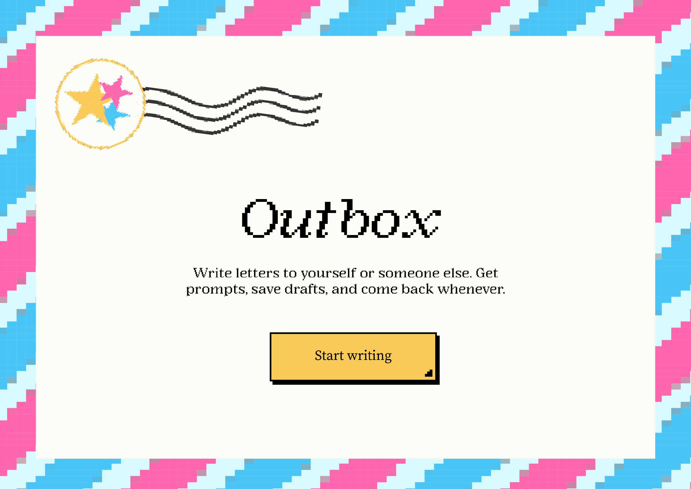
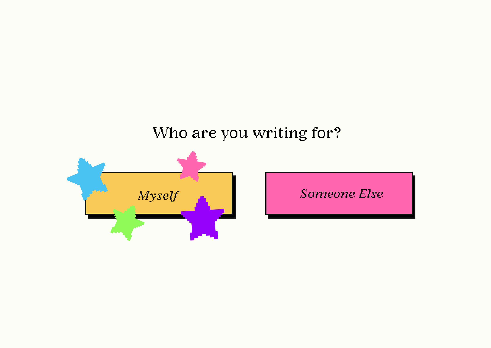
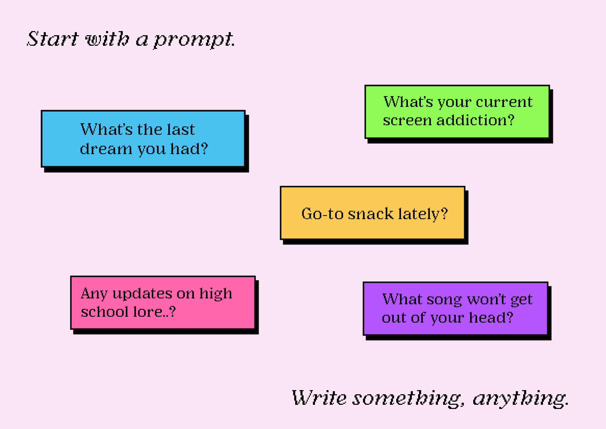
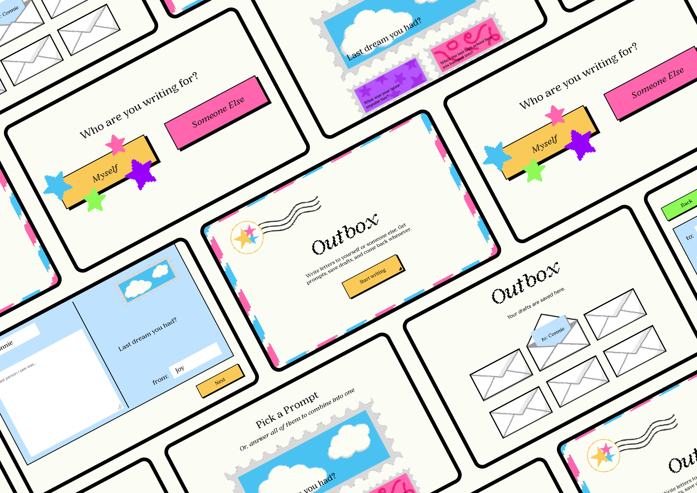

Main insight from research



Challenge
Investigate a creative project that explores a context, subject, and medium within the field of media design. This project is self led and experiment based to create a design collateral that answers a research question.
DISCOVER
From assumptions beforehand, I knew that it was not something everyone did. I always blah blah.
Through academic research, a common theme across papers I found was that:
DEFINE
Wanted to know do people send/write letters? building connections rituals/motivations habits what they talk about prefer physical > digital

Habits
Likes to write letters but rarely does it; usually only for birthdays, goodbyes, or special occasions. Viewed as very formal and serious.
Structure
Users rely on familiar formats when writing letters, which provides guidance but can limit personal expression and creativity. They type a draft before committing to writing.
How might we...
CLARIFY
I had a difficult time coming up with the solution. I wanted to code a website, but that seemed like ironic for someone who wants to encourage people to write more (something physical).

took inspiration from spotify
Decided to pivot the focus of the goal:
Previous
Now
also had a technical goal of adding delight through microinteraction!
CONCEPTUALISE

Initial wireframes to figure out the flow and structure of the experience

Lofi prototype

Experimenting with Rive to create micro-interactions
OUTCOME
The idea is a fun, guided way to write letters without staring at a blank page. Instead of making you figure out what to say, it gives you playful, casual prompts that make writing feel easy and kind of enjoyable. You can write to someone else or yourself, and the flow is simple and relaxed, like you’re just having a little reflective moment. It’s designed to feel light and a bit delightful, with features like “continue writing,” archiving drafts, and rotating prompts to keep things interesting. The goal is to see if a guided, low-pressure approach can make letter-writing something people actually enjoy doing, even in a digital format.

REFLECTION
reflection...